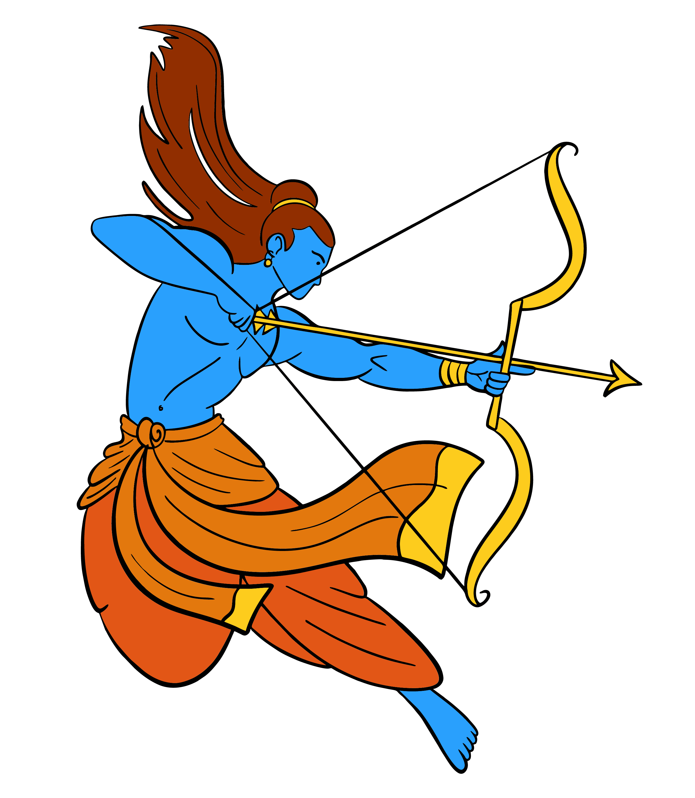
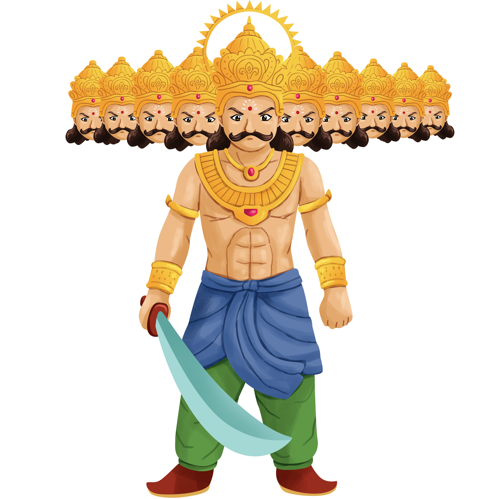

Dussehra, also known as Vijayadashami, is a major Hindu festival celebrated at the end of Navaratri every year. It symbolizes the victory of good over evil.
The festival commemorates Lord Rama's victory over the demon king Ravana. According to the epic Ramayana, Ravana abducted Rama's wife Sita. After a long battle, Rama defeated Ravana, rescuing Sita and restoring dharma.
The game above represents the climactic moment of the Ramayana, where Rama shoots an arrow to defeat Ravana. This act symbolizes the triumph of virtue over vice, and is central to Dussehra celebrations across India.
Dussehra is celebrated in various ways across India: